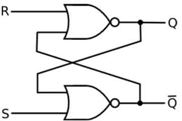
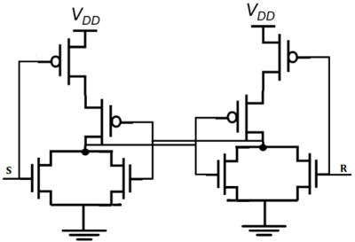
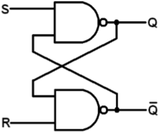
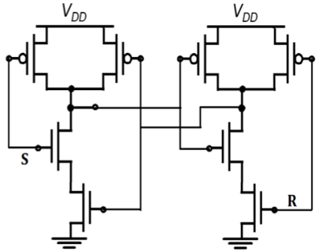
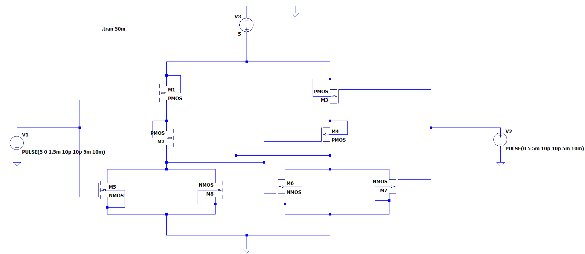
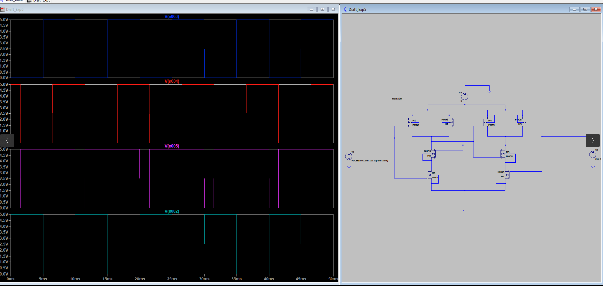
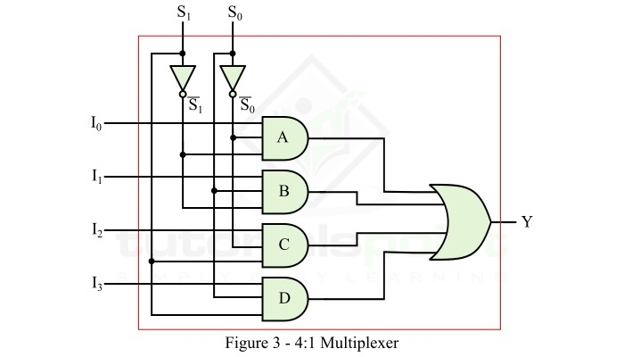
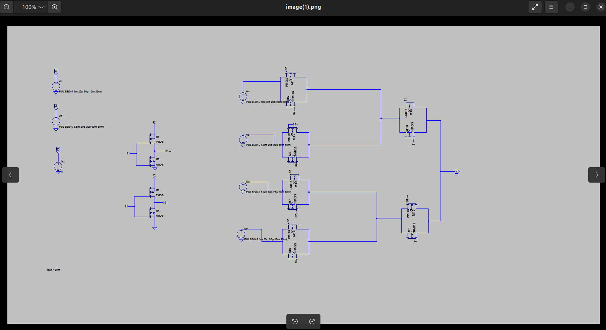
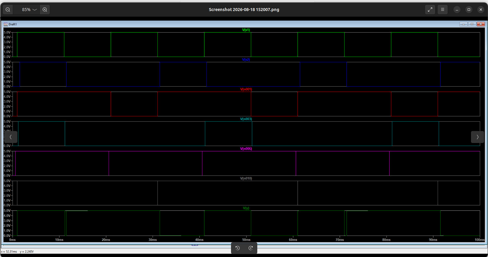

Experiment No. 05
To implement and analyze SR Latch using static CMOS design style
OBJECTIVE: To simulate the schematic of SR latch
SOFTWARE: LT Spice
THEORY:

If the set input (S) is equal to logic "1" and the reset input is equal to logic "0." then the output Q will be forced to logic "1". While Q¯ is forced to logic "0". This means the SR latch will be set, irrespective of its previous state.
Similarly, if S is equal to "0" and R is equal to "1" then the output Q will be forced to "0" while Q¯¯ is forced to "1". This means the latch is reset, regardless of its previously held state. Finally, if both of the inputs S and R are equal to logic "1" then both output will be forced to logic "0" which conflicts with the complementarily of Q and Q¯¯
Therefore, this input combination is not allowed during normal operation. Truth table of NOR based SR Latch is given in table.
| S | R | Q | Operation |
|---|---|---|---|
| 0 | 0 | Q | Hold |
| 1 | 0 | 1 | Set |
| 0 | 1 | 0 | Reset |
| 1 | 1 | 0 | Not allowed |
CMOS SR latch based on NOR gate is shown in the figure given below.

If the S is equal to VOH and the R is equal to VOL, both of the parallel-connected transistors M1 and M2 will be ON. The voltage on node Q¯will assume a logic-low level of VOL = 0.
At the same time, both M3 and M4 are turned off, which results in a logic-high voltage VOH at node Q. If the R is equal to VOH and the S is equal to VOL, M1 and M2 turned off and M3 and M4 turned on.

Block diagram and gate level schematic of NAND based SR latch is shown in the figure. The small circles at the S and R input terminals represents that the circuit responds to active low input signals. The truth table of NAND based SR latch is given in table
| S | R | Q | Q′ | |
|---|---|---|---|---|
| 0 | 0 | NC | NC | No change. Latch remained in present state. |
| 1 | 0 | 1 | 0 | Latch SET. |
| 0 | 1 | 0 | 1 | Latch RESET. |
| 1 | 1 | 0 | 0 | Invalid condition. |
If S goes to 0 (while R = 1), Q goes high, pulling Q¯¯ low and the latch enters Set state
S = 0 then Q = 1 (if R = 1)
If R goes to 0 (while S = 1), Q goes high, pulling Q¯low and the latch is Reset
R = 0 then Q = 1 (if S = 1)
Hold state requires both S and R to be high. If S = R = 0 then output is not allowed, as it would result in an indeterminate state. CMOS SR Latch based on NAND Gate is shown in figure.

The CMOS circuit implementation has low static power dissipation and high noise margin.
PROCEDURE:
Open LT Spice
In Files Menu---click on new schematics
Go to Components---Select each required component----do connections.
Simulate edit command : add required voltage level
Simulate the schematic --- in Tools menu ----go to Simulation(spice)--- click on Write Spice deck.
LT Spice window gets opened. There Right click on the black window---click on add trace.


CONCLUSION:
The SR Latch was successfully implemented using static CMOS design. Its Set, Reset, Hold, and Invalid states were verified, demonstrating correct bistable operation and reliable data storage.
Experiment No. 06
To implement and analyze multiplexer using CMOS transmission gate
OBJECTIVE: To simulate the schematic of Multiplexer
SOFTWARE: LT Spice
THEORY:
A 4:1 multiplexer (MUX) is the MUX which has 4 input lines (I0, I1, I2, and I3), 2 select line (S0 and S1), and 1 output line (Y). The logic levels applied to the select lines S0 and S1 determine which data input will transmit to the output line.
For determining the Boolean expression for output (Y) of the 4:1 multiplexer and its logic circuitry, we require its function table (truth table) that provides information about the operation of its circuit. The function table of the 4:1 multiplexer with data inputs I0, I1, I2, and I3 is given below.
| Select Lines | Output(Y) | |
|---|---|---|
| S1 | S0 | |
| 0 | 0 | I0 |
| 0 | 0 | I1 |
| 1 | 0 | I2 |
| 1 | 1 | I3 |
Using this truth table, we can write the logic expression for the output of 4:1 MUX as,
Y=S1¯S0¯I0+S1¯S0I1+S1S0¯I2+S1S0I3 implement this logic expression, we require four AND gates, two NOT gates, and one OR gate. Thus, the logic circuit of the 4:1 MUX is shown in Figure-3.

This logic circuit of the 4:1 MUX shown in Figure-3 will work as follows −
When S1 = 0 and S0 = 0, the AND gate A is enabled, and the AND gates B, C, and D are disabled. So, the output Y = I0.
When S1 = 0 and S0 = 1, the AND gate B is enabled, and the AND gates A, C, and D are disabled. So, the output Y = I1.
When S1 = 1 and S0 = 0, the AND gate C is enabled, and the AND gates A, B, and D are disabled. So, the output Y = I2.
When S1 = 1 and S0 = 1, the AND gate D is enabled, and the AND gates A, B, and C are disabled. So, the output Y = I3.
The multiplexer is one of the widely combinational logic circuits in digital systems. Some important applications of the multiplexers are listed below.
Multiplexer is used as data selector device.
Multiplexers are used in communication systems to increase the efficiency of the system.
Multiplexers are used in telephone networks for integration of several audio signals on a single transmission line.
To maintain large amount of data, multiplexers are also used in computer memory systems.
Multiplexers are also employed in TV broadcasting systems.
Multiplexers are used in satellite communication and GPS (Global Positioning System).
Multiplexers are also used in PLC (Programmable Logic Control) systems, etc.
PROCEDURE:
Open LT Spice
In Files Menu---click on new schematics
Go to Components---Select each required component----do connections.
Simulate edit command : add required voltage level
Simulate the schematic --- in Tools menu ----go to Simulation(spice)--- click on Write Spice deck.
LT Spice window gets opened. There Right click on the black window---click on add trace.

OUTPUT:

CONCLUSION:
The Multiplexer was successfully implemented using a CMOS transmission gate. Its selection and data transfer operations were verified, demonstrating correct switching behavior and efficient signal transmission.